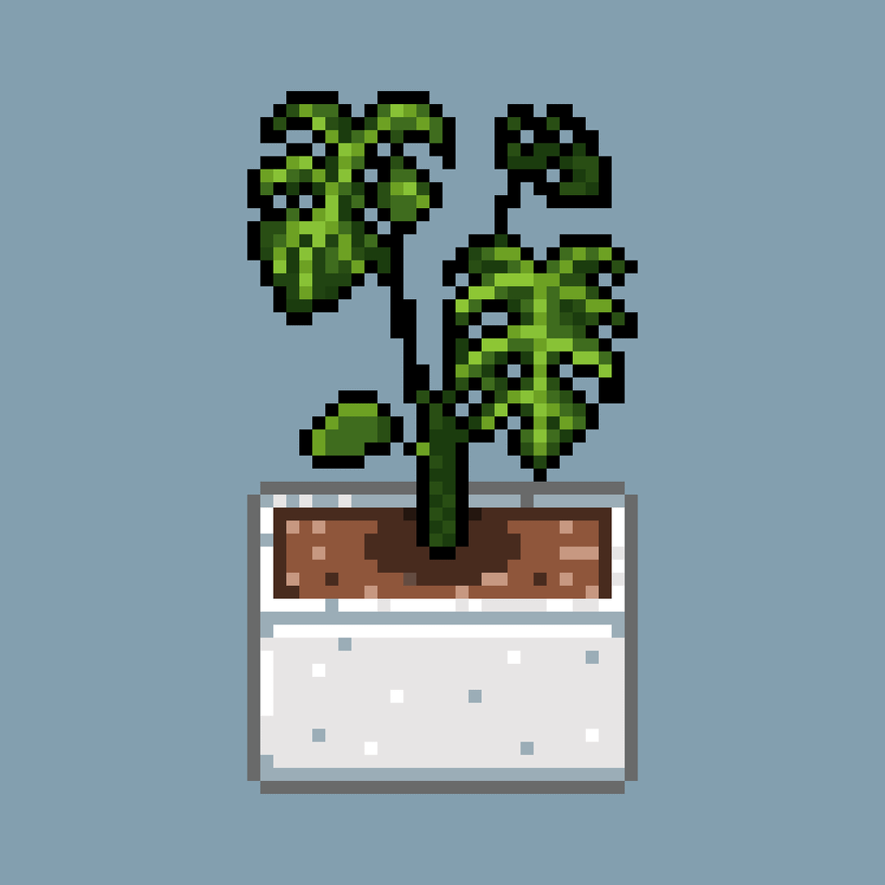
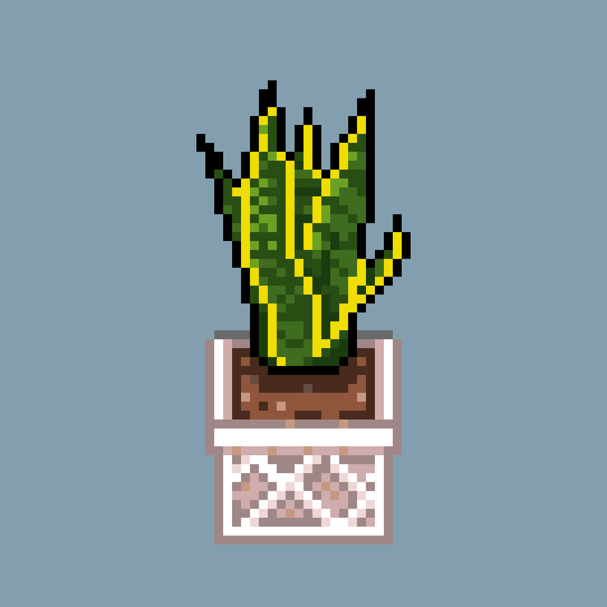
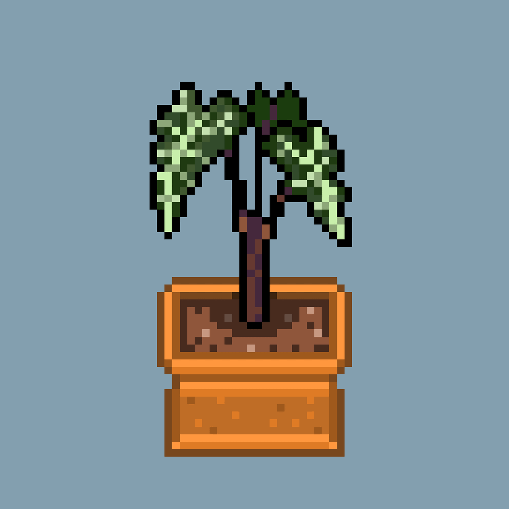
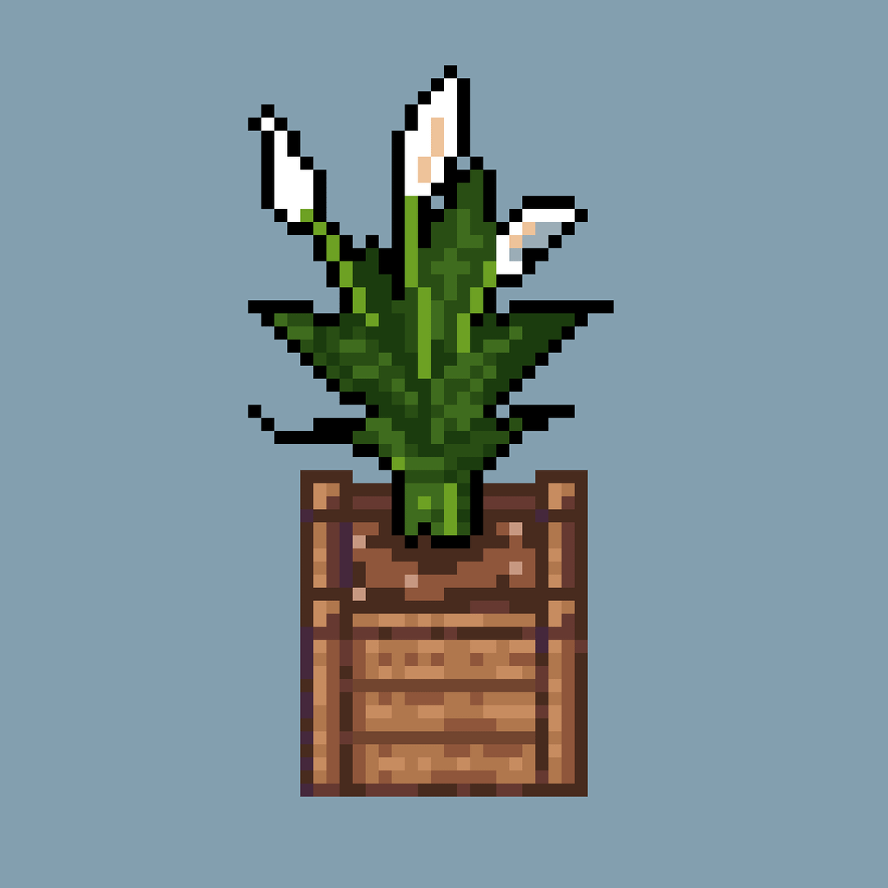

registro botánico v0.1
plantas registradas: 4

especie: monstera deliciosa
luz: indirecta media
riego: semanal
estado: feliz

especie: dracaena trifasciata
luz: baja a media
riego: cada 2-3 semanas
estado: feliz

especie: alocasia
luz: indirecta brillante
riego: mantener suelo ligeramente húmedo
estado: creciendo

especie: spathiphyllum
luz: baja a media
riego: cuando el sustrato empieza a secarse
estado: feliz